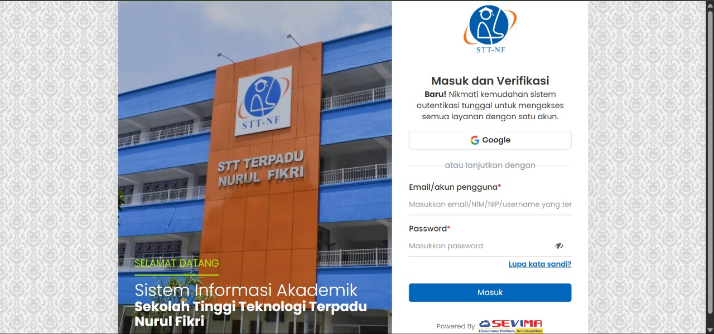

About us
Sekolah Tinggi Teknologi Terpadu Nurul Fikri (STT NF) adalah perguruan tinggi yang berfokus pada pengembangan teknologi informasi dengan landasan nilai-nilai Islam. Berdiri di bawah naungan Yayasan Nurul Fikri, kampus ini hadir sebagai tempat lahirnya generasi muda yang tidak hanya cakap secara intelektual, tetapi juga memiliki integritas dan karakter yang kuat.
Infracstructure Infracstructure Server Kampus

Siska
Siska merupakan salah satu infrastruktur dari kampus yang berfungsi mengelola akademik kampus.
NFLibary
NFLibary adalah infrastruktur yang menyediakan peminjaman buku dan menyediakan referensi jurnal untuk mahasiswa.